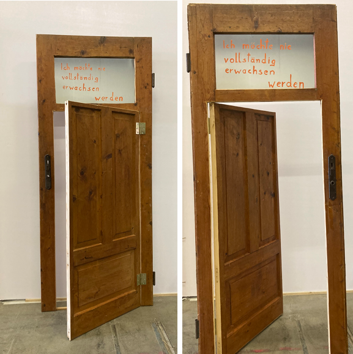
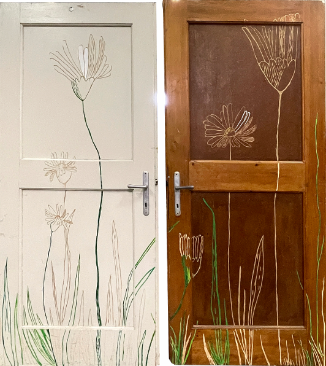

,,...aus den Angeln"
Exponante der ausstellung im Landhaus Bregenz
Zugunsten der Initiative SPIELLERNRAUM
Mit versteigerung am 28. November 2025 um 18.00Uhr
Roland Aldassnigg
,,ich möchte nie vollständig erwachsen werden"

Ingrid Dachler
,,Gänseblümchen"

Die beiden Turseiten sind als Holzschnitttafeln bearbeitet - die weisse und die braune
Seite als Ying und Yang-Symbol stehen fur die Licht- und Schattenseiten des Lebens. Sie
konnen mit Reinheit, Unschuld, Neuanfangen und Liebe in Verbindung gebracht werden.
Auch Kindheit, Bescheidenheit und Freude kann assoziiert werden.